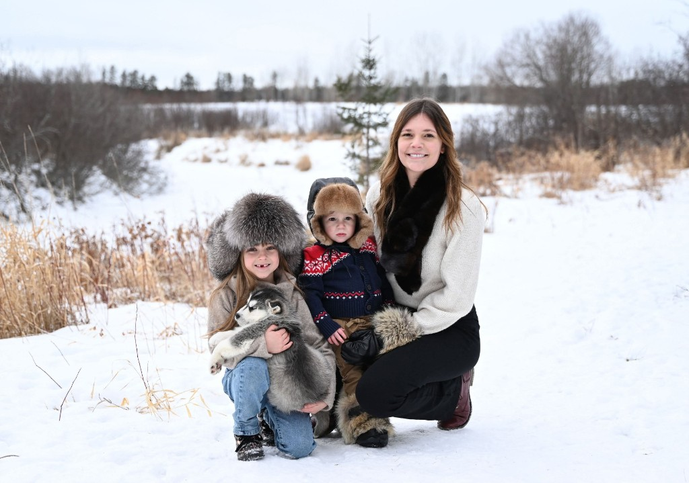
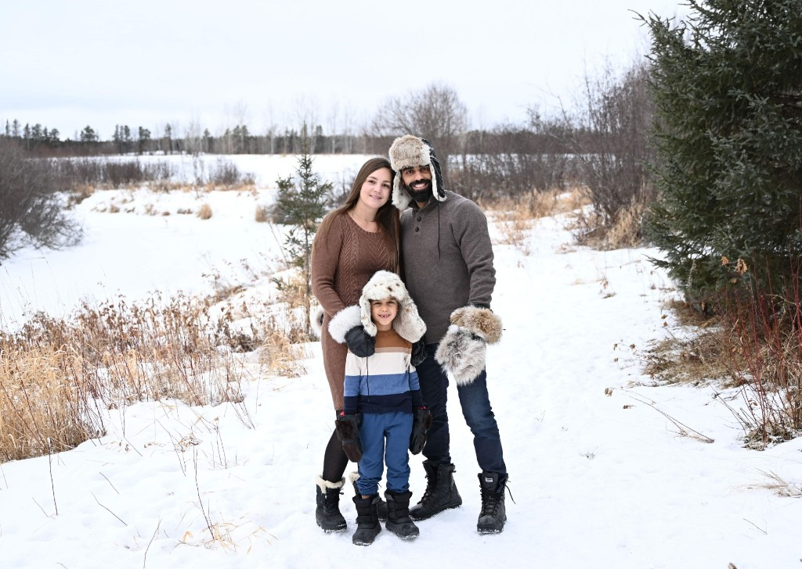
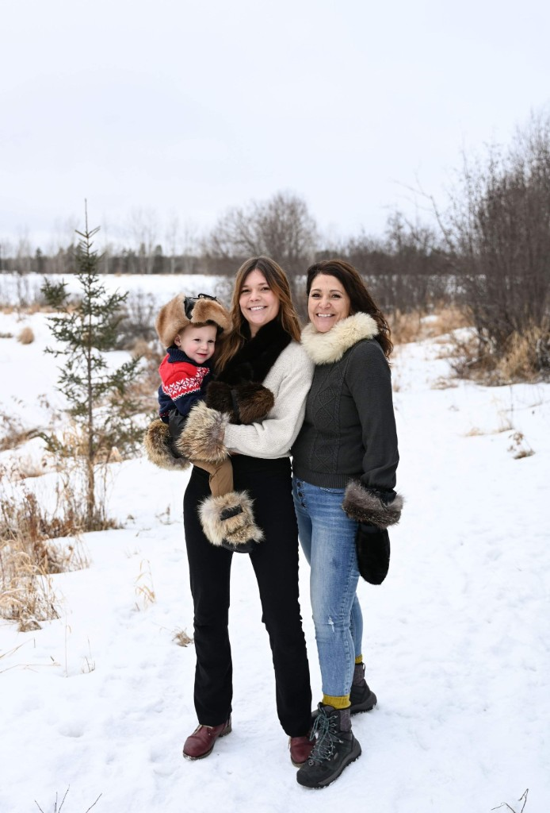
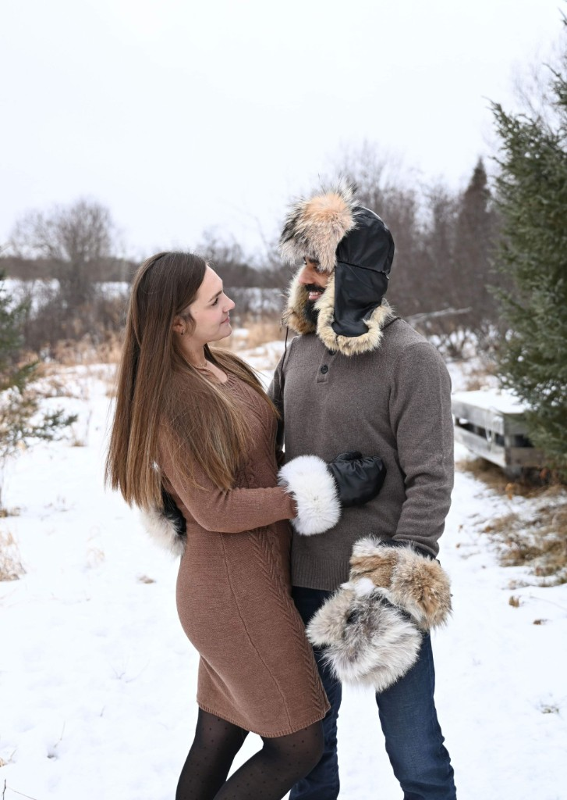
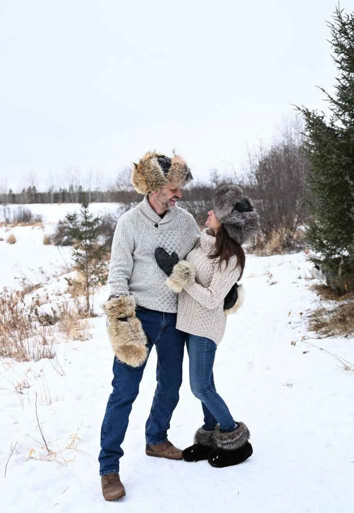
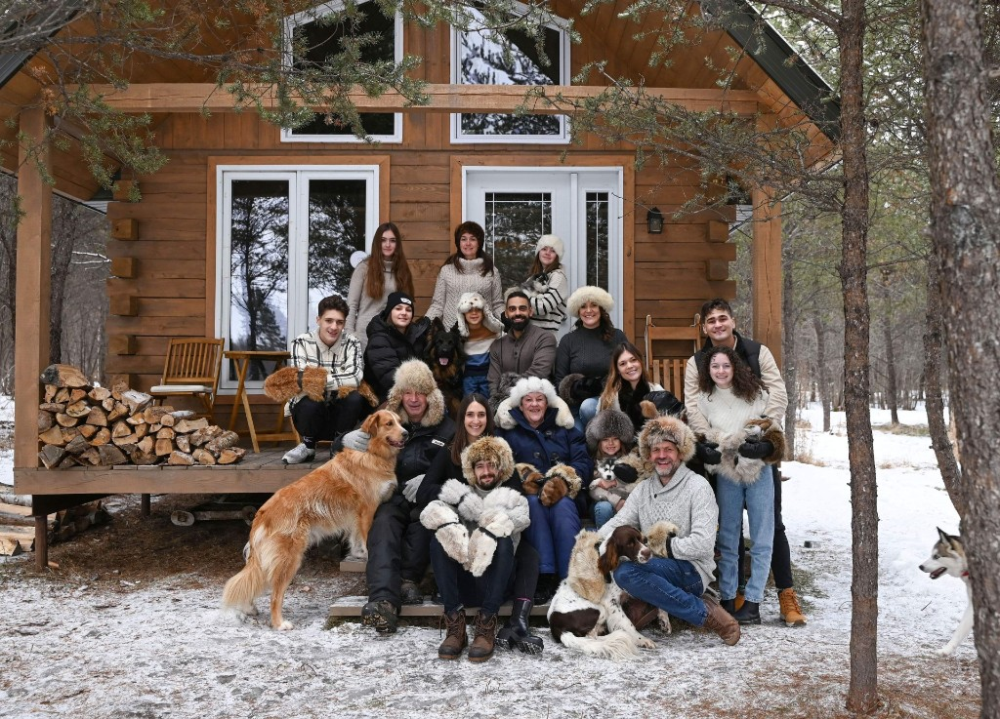

Nos créations portées
L’univers de mes créations est riche en diversité, où chaque pièce est confectionnée avec soin et passion à partir de fourrure recyclée et de cuir d’agneau neuf.
Alliant chaleur, confort et durabilité, mes créations se distinguent par leur caractère unique et leur qualité artisanale. Chaque article possède sa propre personnalité, ce qui en fait un cadeau original et attentionné, que vous ne trouverez nulle part ailleurs.
Découvrez les photos ci-dessous pour admirer mes créations portées et vous inspirer des différents modèles.





